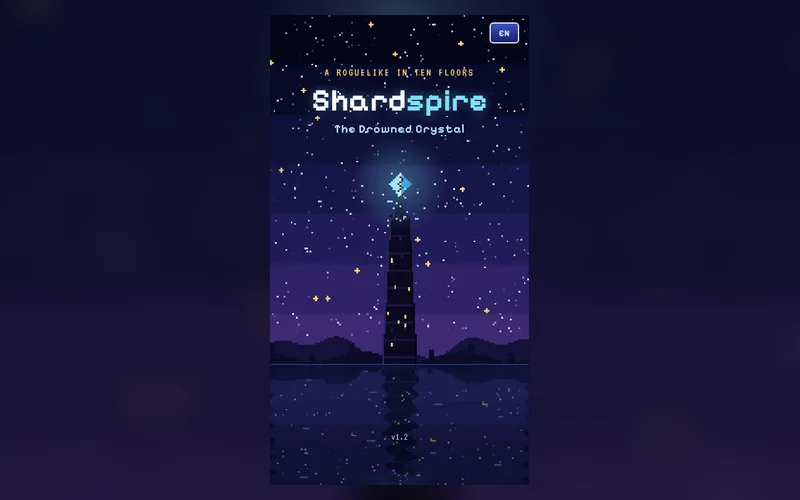

Roguelike · JRPG
Shardspire
A turn-based pixel-art roguelike in the spirit of classic JRPGs. Pick a hero, descend branching biomes, build your run with talents and loot, and face seven bosses with telegraphed attacks.
▶ Play